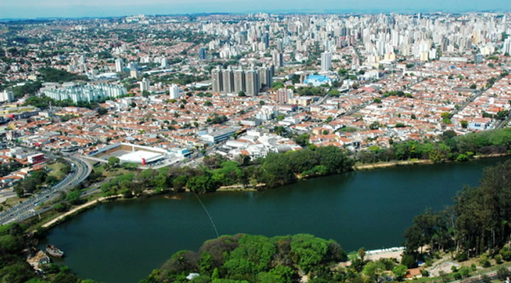
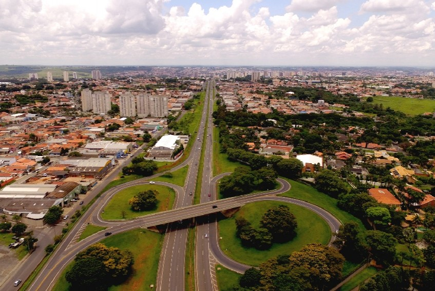
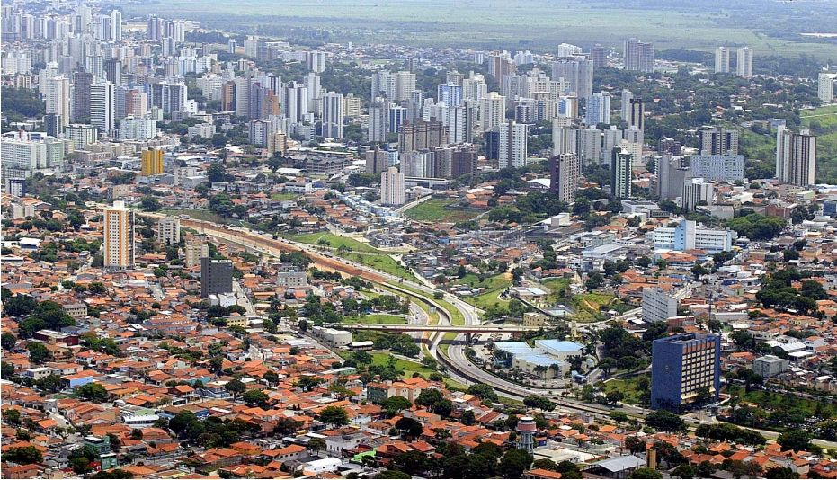
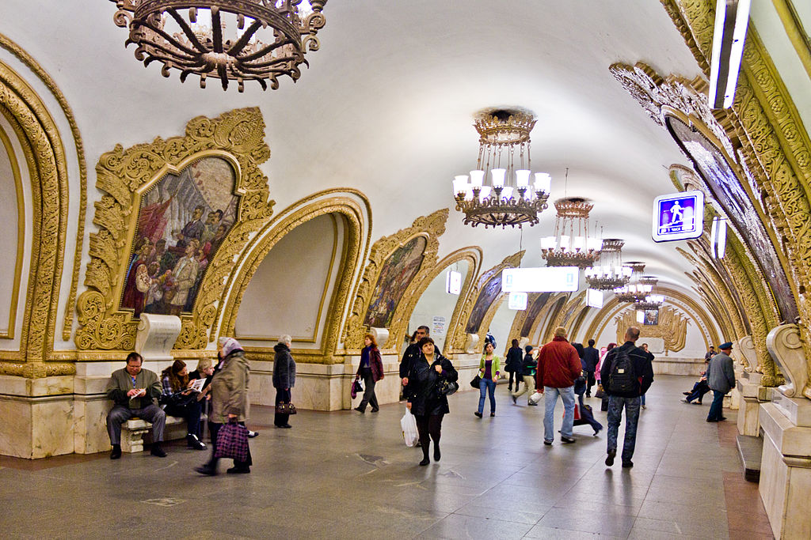

| # | Cidade | Pais | Lingua nativa |
|---|---|---|---|
| 1 | Campinas | Brasil | Português |
| 2 | Limeira | Brasil | Português |
| 3 | São José dos Campos | Brasil | Português |
| 4 | Moscou | Russia | Russo |
| 5 | Bangkok | Tailandia | Tailandês |
Campinas é um município brasileiro no interior do estado de São Paulo, Região Sudeste do país. Pertence à microrregião e mesorregião homônimas, distante 99 km a noroeste de São Paulo, capital estadual. Ocupa uma área de 797,6 km², da qual 238,323 km² estão em perímetro urbano e os 559,277 km² restantes constituem a zona rural.
Em 2020, sua população foi estimada pelo Instituto Brasileiro de Geografia e Estatística em 1.213.792 habitantes, sendo o terceiro município mais populoso de São Paulo (ficando atrás de Guarulhos e da capital) e o décimo quarto de todo o país.
Aparece em quinto lugar entre 100 municípios analisados pelo Índice das Melhores e Maiores Cidades Brasileiras, o BCI100, elaborado pela Delta Economics & Finance com base nos dados do Censo 2010 do IBGE e do Ideb.

Limeira é um município brasileiro situado no Centro-Leste do estado de São Paulo, localizada a 22°33'53" de latitude sul e 47°24'06" de longitude oeste, a uma altitude de 588 metros, fazendo parte do complexo metropolitano paulista, o maior do hemisfério sul, com cerca de 30 milhões de habitantes.
Possui uma área de 581,0 km². Sua população estimada em 2017 era de 300.911 habitantes.
Limeira também foi conhecida por Capital da Laranja e Berço da Citricultura Nacional, dados o pioneirismo e a grande produção citrícola que o município desenvolveu. Mais recentemente, a agricultura da cidade destaca-se pelo cultivo da cana-de-açúcar e pela produção de mudas cítricas.

São José dos Campos é um município brasileiro no interior do estado de São Paulo. Está situado no Vale do Paraíba Paulista, a leste da capital do estado, distando desta cerca de 81 km.
É sede da Região Metropolitana do Vale do Paraíba e Litoral Norte e ocupa uma área de 1 099,409km², da qual 353,9 km² estão em perímetro urbano, com uma população estimada pelo IBGE em 729.737 habitantes, sendo o quinto mais populoso de São Paulo e o 23.º de todo o país, além de ser o segundo município mais populoso do interior do Brasil, ficando atrás somente de Campinas.
O município está integrado — junto com as regiões metropolitanas de São Paulo, Campinas, Sorocaba e Baixada Santista — ao Complexo Metropolitano Expandido, uma megalópole que ultrapassa os trinta milhões de habitantes (cerca 75% da população paulista) e que é a primeira aglomeração urbana do tipo no hemisfério sul.

Moscou é uma cidade é um importante centro político, econômico, cultural, científico, religioso, financeiro, educacional e de transportes da Rússia e do continente. Moscou é a megacidade mais ao norte na Terra, a segunda cidade mais populosa da Europa, atrás de Istambul, e a sexta cidade mais populosa do mundo, ficando atrás somente de Xangai, Istambul, Pequim, Bombaim e Carachi. Sua população, de acordo com os resultados de estatísticas federais, já ultrapassou os 12 milhões. Com base na lista de 2012 da Forbes, Moscou tem a segunda maior comunidade de milionários do mundo.
- Moscou sempre foi uma cidade muito atipica em relação ao ocidente, tem uma cultura fantatica e pessoas totalmente diferentes em relação a cultura em que estamos acostumados com a cultura latina e estunidense.

A capital da Tailândia é Bangkok, sua principal cidade turística e também a porta de entrada da maior parte dos turistas. A cidade possui belos templos e bons locais para compras, incluindo eletrônicos a bons preços. Bangkok é uma cidade moderna, conta com metrô e tem prédios lindos e modernos contrastando com os templos tradicionalíssimos. Não se parece em nada com o caos mostrado nos filmes (que se resume à Kao San Road).
- É uma cidade muito espiritual e muito barata de se viajar.